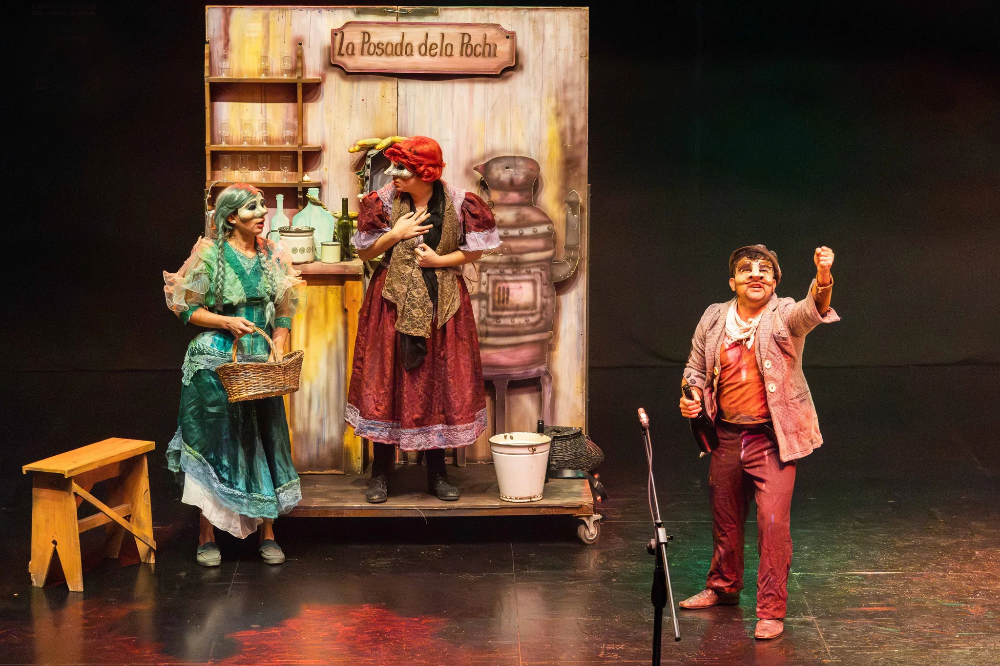

Montaje teatral «El Misterioso Nacimiento de un Tue tué»
“El misterioso nacimiento de un Tue tué” se trata de una obra fresca y liviana que coloca en valor la identidad de la zona central de Chile abordando la leyenda del pájaro brujo Tue tué, desde la mirada de una familia de “Guachucheros”.